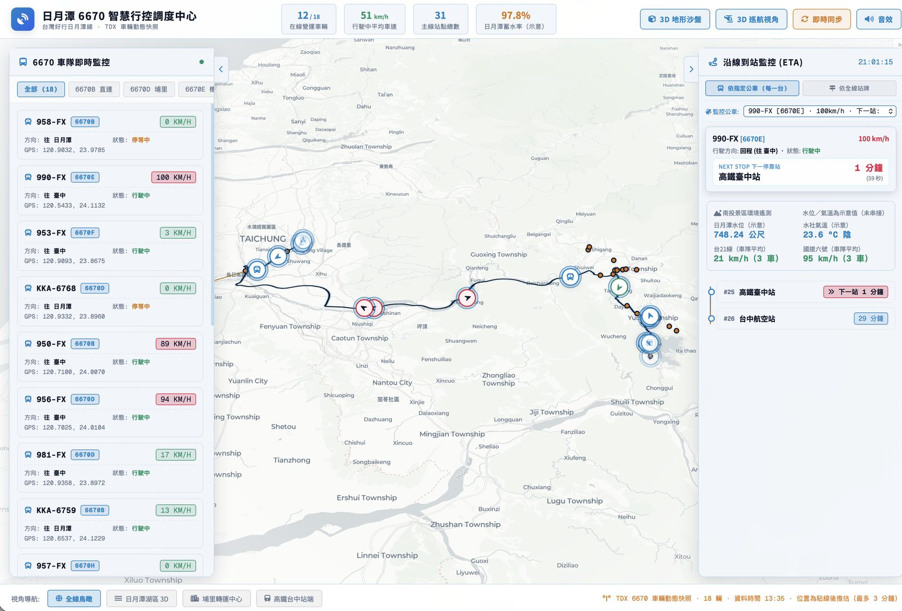
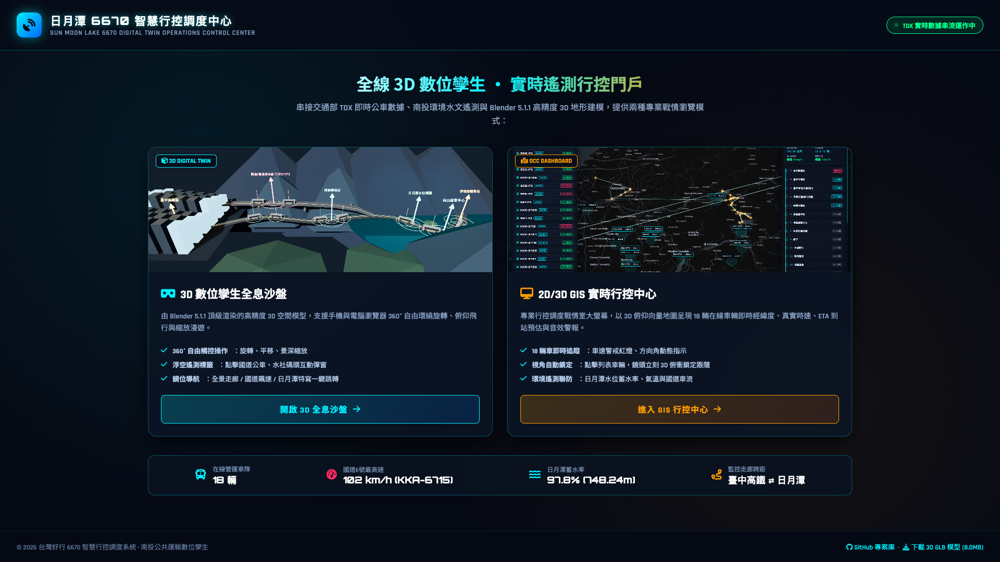
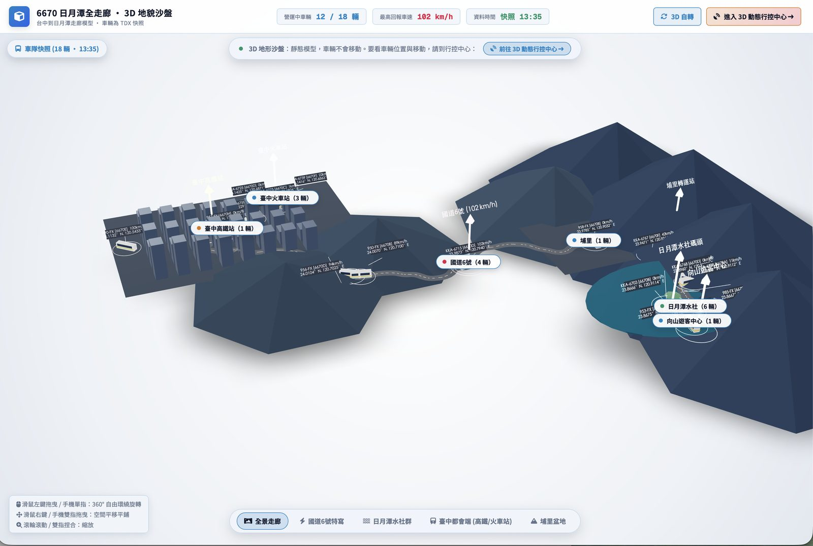
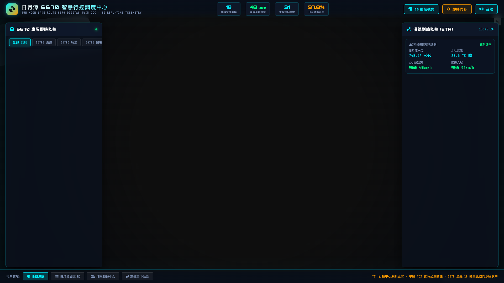

Sun Moon Lake 6670 Digital Twin Operations Command Center

全線 6670 車隊即時雷達監控大屏。GPS 車機軌跡平滑貼合，車速與方位角向量即時呈現，到站倒數秒數精確推估。

基於 2024–2025 歷史 180 萬筆電子票證大數據，支援 725 日客流全日時間軸重播、對數 Ridge 旅運預測與最佳化班次重排。

依真實 GIS 路網與 Blender 建立的台中至日月潭走廊 3D 模型，直觀展示國道 6 號與埔里盆地到魚池的真實爬坡高差。

聚焦日月潭水社樞紐與向山支線，支援前端直連觀光署 TAD API 實時刷新，精準掌握進出景區的車輛分布與旅客疏運。